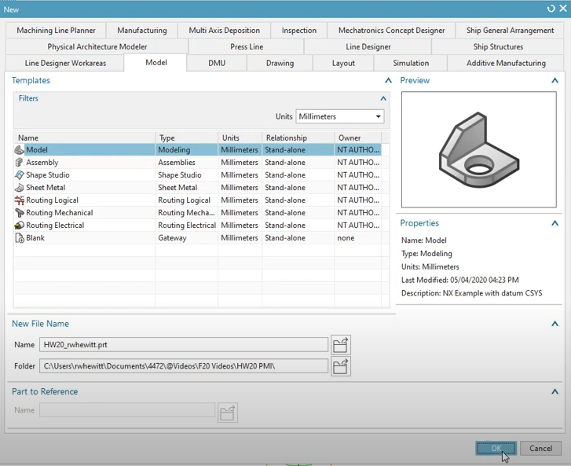
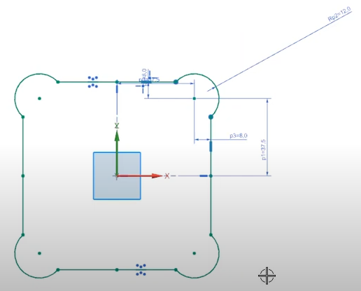

NX1980 tutorial <<
Previous Next >> NX Sheet Metal Introduction
NX PMI
這段影片的作者打算製作一個新的零組件、並且幫它增加機械設計的真平、垂直等方式，讓我們看看教學吧。
首先，創建一個新的零組件

記得，右上角的Units是尺寸，請使用公制尺寸mm
接著，在左上角啟動新的草圖平面。

隨後開始繪製圖案，如下
順帶提醒，在上方工具列中有個可以選取單一線或者聚合線的選擇，可以讓你更好的去選取那些線條。
以及如果你選取了兩樣物件，你可以為他們添加限制，如共線、共點、平行垂直等等。
影片中它使用了鏡射處理將圖繪出。

隨後他便做出了擠出指令，讓整個主體給展現。
以及開孔，為它想製作的物件增加孔位
從Application中，我們可以打開PMI指令欄位。
PMI指令是什麼:就是替你的零組件增加表面精度，
NX1980 tutorial <<
Previous Next >> NX Sheet Metal Introduction